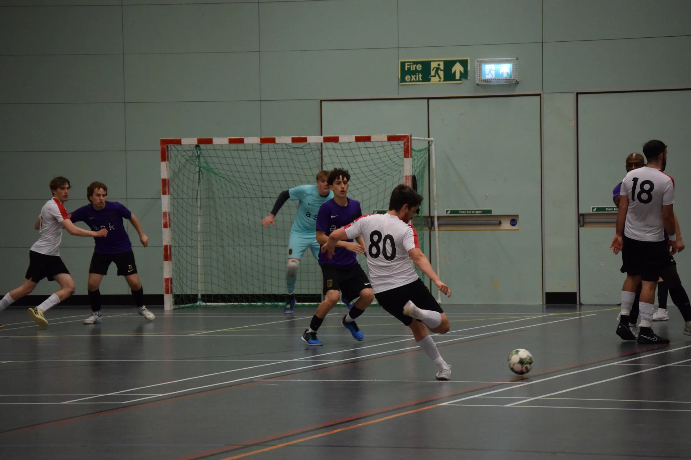
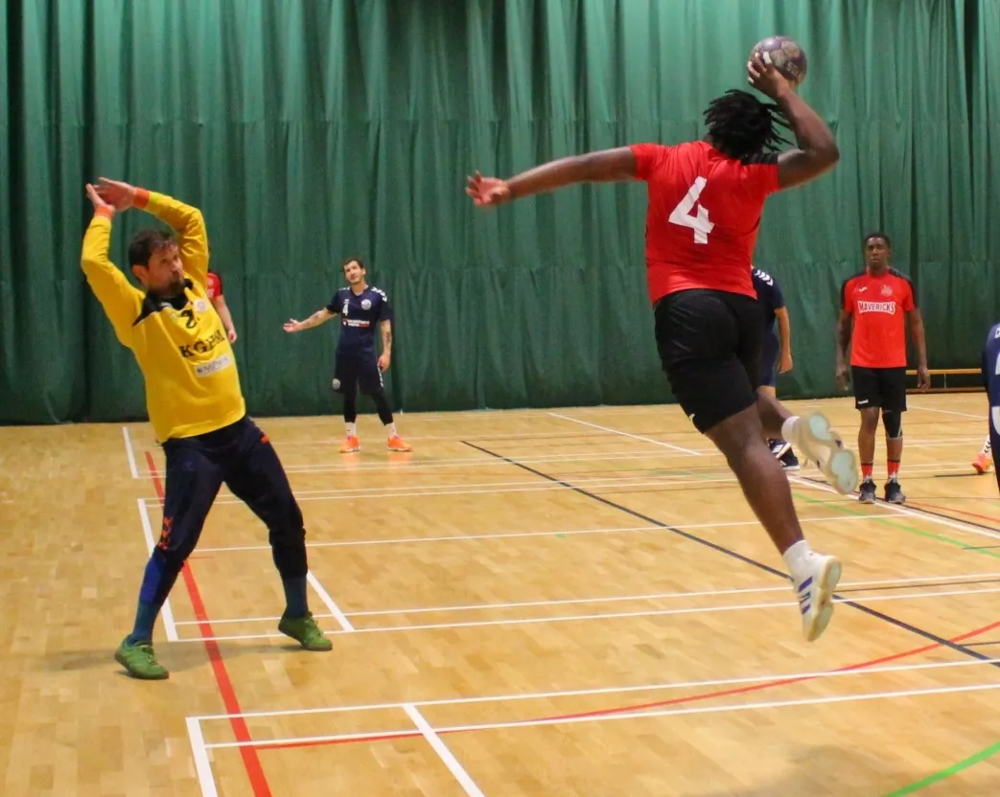

Adult Teams
For both recreational and competitive players.
The Mavericks are a community sports organisation focused on supporting long-term player development through continuous coaching and inclusion in the games of futsal and handball. Our commitment is to create a safe, positive environment in which all players can learn, play and enjoy the game.
With the endorsement of Berks & Bucks FA, we're proud to introduce a new and exciting sport to the youth of Milton Keynes, Bucks, and Beds. Futsal is a fast-paced 5v5 game originating from South America and played worldwide. It is the only small-sided format officially recognised by UEFA and FIFA.
The smaller playing area, faster pace, and increased ball touches build skills that are crucial for player development:
Many of the world's top footballers played futsal in their youth and credit it with supporting their development. The game puts players in situations where they have to adapt and be creative to escape from tight areas.

We are a welcoming and competitive handball club, bringing together players of all ages, abilities, and backgrounds. Whether you're completely new to the sport or an experienced player looking for a team, our club offers a supportive environment where everyone can develop, compete, and enjoy the game.
Handball is a fast-paced indoor team sport played between two teams of seven players (six outfield players and one goalkeeper). The objective is simple: score more goals than the opposition by throwing the ball into their net. Combining elements of football, basketball, and netball, handball is known for its speed, skill, and physicality.

Our handball teams cover a range of age groups, so players of all ages can take part and develop their skills, from junior teams to senior squads.
For both recreational and competitive players.
Focused on development and competition.
For younger players just starting out.
We run both men's and women's teams, with opportunities for mixed training sessions depending on age group and level, so everyone has the chance to play, improve, and be part of a team.
Whether you're looking to learn a new sport, stay active, or compete at a higher level, we'd love to hear from you.
Get in touch